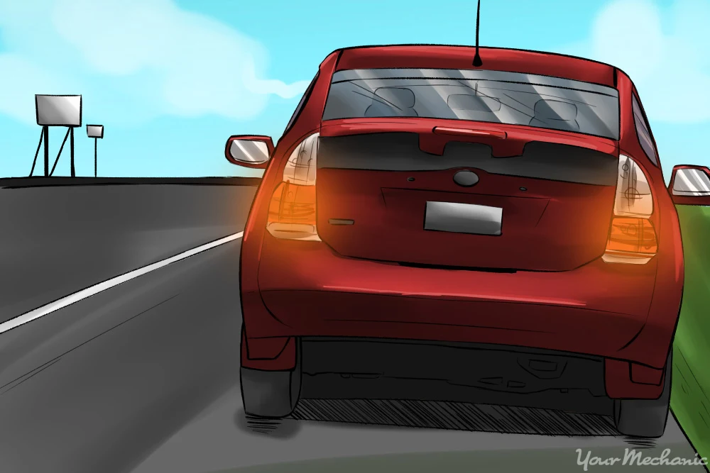

Emergency Driving Situations: What to Do When Things Go Wrong
Published on
Every driver will eventually face an emergency situation on the road. Whether it's a brake failure, tire blowout, or unexpected accident, knowing how to respond quickly and calmly can mean the difference between a minor incident and a serious tragedy. At Rajput Driving School in Windsor, we believe that emergency preparedness is as crucial as learning basic driving skills. This comprehensive guide covers the most common emergency situations and provides step-by-step instructions to help you stay safe and minimize damage.

The Golden Rules of Emergency Driving
Before diving into specific scenarios, remember these fundamental principles that apply to all emergency situations:
Stay Calm: Panic reduces your ability to think clearly and react appropriately
Maintain Control: Keep both hands on the wheel and maintain steering control
Signal Your Intentions: Use hazard lights, horn, and hand signals to alert other drivers
Move to Safety: Get off the roadway when possible to avoid secondary collisions
Call for Help: Use your phone to call 911 or roadside assistance
1. Brake Failure: When Your Brakes Stop Working
Brake failure is one of the most terrifying emergency situations, but staying calm and following the correct procedure can save your life.
Immediate Response Steps:
Pump the Brake Pedal: Try pumping the brakes rapidly to build pressure in the brake system
Downshift Gradually: If you have a manual transmission, downshift to use engine braking
Use the Parking Brake: Apply the parking brake slowly and steadily, not abruptly
Look for Escape Routes: Identify safe areas to pull over or use to slow down
Use Roadside Barriers: As a last resort, use guardrails or barriers to slow the vehicle
Prevention Tips:
Regular brake inspections and maintenance
Listen for unusual sounds when braking
Check brake fluid levels monthly
Replace brake pads before they're completely worn
2. Tire Blowout: Handling Sudden Tire Failure
A tire blowout can cause your vehicle to pull sharply to one side, making it feel like you're losing control. The key is to maintain steering control and avoid overcorrecting.
Step-by-Step Response:
Grip the Steering Wheel Firmly: Hold the wheel with both hands to maintain control
Don't Brake Immediately: Avoid sudden braking which can cause the vehicle to spin
Let Off the Accelerator: Gradually reduce speed by lifting your foot from the gas pedal
Steer Straight: Keep the vehicle moving straight ahead, fighting any pulling
Brake Gently: Once speed is reduced, apply brakes lightly and steadily
Pull Over Safely: Move to the shoulder or a safe area when speed is low enough
What NOT to Do:
Don't panic and jerk the steering wheel
Don't brake hard immediately
Don't try to drive on the flat tire for long distances
3. Engine Failure: When Your Car Stops Running
Engine failure can happen suddenly due to mechanical problems, overheating, or running out of fuel. The priority is to get your vehicle to a safe location.
Immediate Actions:
Turn on Hazard Lights: Alert other drivers that you're experiencing problems
Steer to Safety: Use remaining momentum to get off the roadway
Try to Restart: Attempt to restart the engine if it's safe to do so
Check Gauges: Look for warning lights indicating the cause of the problem
Call for Help: Contact roadside assistance or emergency services
Common Causes and Solutions:
Overheating: Turn off the engine and wait for it to cool before checking coolant levels
Fuel Issues: Check if you're out of gas or have a fuel system problem
Electrical Problems: Check battery connections and alternator function
4. Hydroplaning: Losing Control on Wet Roads
Hydroplaning occurs when your tires lose contact with the road surface due to water buildup. This is especially common in Windsor during spring rains and fall weather.
Recovery Techniques:
Ease Off the Accelerator: Don't brake or accelerate suddenly
Steer Straight: Keep the steering wheel straight and steady
Let the Vehicle Slow: Allow natural deceleration to restore tire contact
Gently Apply Brakes: Once you feel control returning, brake lightly
5. Steering Failure: When You Can't Control Direction
Steering failure is rare but extremely dangerous. It can be caused by broken steering components, power steering failure, or mechanical issues.
Emergency Response:
Don't Panic: Stay calm and focused on the situation
Turn on Hazard Lights: Alert other drivers immediately
Use Engine Braking: Downshift to slow the vehicle without using brakes
Look for Escape Routes: Identify safe areas to guide the vehicle
Call Emergency Services: Get professional help as quickly as possible
6. Accident Response: What to Do After a Collision
Even with the best preparation, accidents can still happen. Knowing the proper response can help ensure everyone's safety and protect your legal interests.
Immediate Post-Accident Steps:
Check for Injuries: Assess yourself and passengers for injuries
Move to Safety: If possible, move vehicles out of traffic
Call 911: Report the accident to police and request medical help if needed
Exchange Information: Get names, phone numbers, insurance details, and license plate numbers
Document the Scene: Take photos of damage, road conditions, and vehicle positions
Contact Insurance: Report the accident to your insurance company promptly
What to Avoid After an Accident:
Don't admit fault at the scene
Don't leave the scene before police arrive (if required)
Don't discuss the accident with other parties' insurance adjusters
Don't sign anything without understanding what it means
7. Medical Emergencies While Driving
Sometimes the emergency isn't with your vehicle but with your health. Knowing how to respond to medical emergencies while driving is crucial.
Common Medical Emergencies:
Heart Attack: Pull over immediately and call 911
Seizure: Stop the vehicle safely and call for help
Diabetic Emergency: Pull over and check blood sugar levels
Severe Allergic Reaction: Use epinephrine if available and call 911
8. Weather-Related Emergencies
Windsor's climate can create challenging driving conditions. Here's how to handle severe weather emergencies:
Severe Thunderstorms:
Reduce speed and increase following distance
Turn on headlights for visibility
Pull over if visibility becomes too poor
Avoid driving through flooded areas
Winter Storms:
Keep emergency supplies in your vehicle
Dress warmly in case you need to exit the vehicle
Stay with your vehicle if stranded
Run the engine periodically for warmth
Emergency Kit Essentials
Every vehicle should carry an emergency kit. Here's what to include:
Safety Items: Reflective triangles, flashlight, first aid kit
Emergency response is as much about mental preparation as it is about knowing the procedures. Here's how to build confidence:
Practice Scenarios:
Visualization: Regularly practice imagining emergency scenarios
Simulation Training: Consider advanced driving courses that include emergency training
Regular Practice: Practice emergency braking and steering in safe environments
When to Seek Professional Training
While this guide provides essential information, nothing replaces hands-on training with professional instructors. At Rajput Driving School, we offer:
Emergency Maneuver Training: Practice emergency braking, skid recovery, and obstacle avoidance
Advanced Driving Courses: Learn defensive driving techniques and hazard recognition
Vehicle Familiarization: Understand your specific vehicle's emergency systems
Conclusion: Preparedness Saves Lives
Emergency situations on the road are unpredictable, but your response doesn't have to be. By understanding these procedures and practicing them regularly, you can significantly improve your chances of staying safe during a crisis. Remember, the most important factor in any emergency is staying calm and thinking clearly.
At Rajput Driving School, we believe that every driver should be prepared for emergencies. Our comprehensive training programs include emergency response techniques, and our experienced instructors can help you build the confidence and skills needed to handle any situation safely.
Don't wait until an emergency happens to learn these skills. Contact us today to schedule advanced driving training that could save your life and the lives of others on the road.